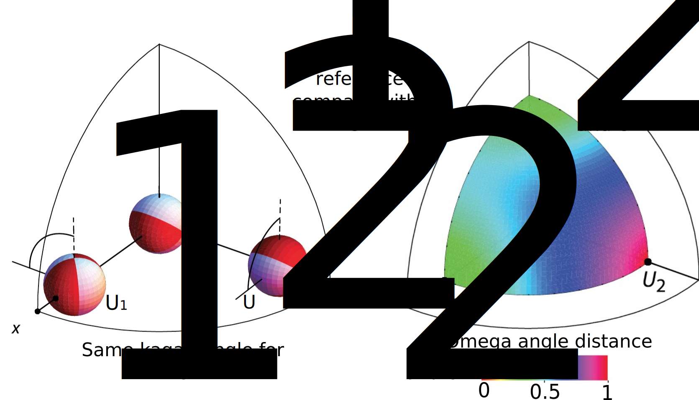

- First two layers 1xN kernel over time
- Third layer 3x1 kernel over station components
- Pooling layer resampling 3x4 (stations and time)
- fully connected layer
- non-activated output layer
Andreas Steinberg¹*, Hannes Vasyura-Bathke²*, Peter Gaebler¹, Matthias Ohrnberger² and Lars Ceranna¹
1 Federal Institute for Geosciences and Natural Resources (BGR), B4.3 Federal Seismological Survey, Nuclear-Test Ban
2 University of Potsdam, Institute for Earth and Environmental Sciences
* equal contribution


$$ \text{Approximate Kullback-Leibler divergence } \text{by drawing Monte Carlo samples } $$
$$ \mathbf{w}^{(i)} \text{ from variational distribution } q(\mathbf{w} \lvert \boldsymbol{\theta}) $$
$$ \text{with prior distribution } p(\boldsymbol{w}) \text{ and data likeliehood } p(\mathcal{D}|\boldsymbol{w}) $$
$$ \mathcal{F}(\mathcal{D},\boldsymbol{\theta}) \approx {1 \over N} \sum_{i=1}^N \left[ \log q(\mathbf{w}^{(i)} \lvert \boldsymbol{\theta}) - \log p(\mathbf{w}^{(i)}) - \log p(\mathcal{D} \lvert \mathbf{w}^{(i)})\right] $$
$$ \boldsymbol{\theta} = (\boldsymbol{\mu}, \boldsymbol{\sigma}) $$
Disclaimer: this is a sketch!

Disclaimer: this is a sketch!
Design inspired by Kriegerowski et al., 2019

➜ errors in the Earth structure, timing and location can to be taken into account

after Tape and Tape, 2012 and Cesca et al., 2014
Ensemble of 6000 MT predictions for four earthquakes
Examplary waveform fits for Mw 4.1 on 2019/07/11 23:45:19

Forward calculated for 20% of the predicted ensemble, observed waveforms (black), MAP in red
Location of Mw 3.9 at 2019-07-06 17:59:15
➡ correlation of the LLK values with distance to the centroid location (black star)
Pre-print available at: https://www.essoar.org/doi/10.1002/essoar.10506663.1
We make the software available as a jupyter notebook at: https://github.com/braunfuss/BNN-MT
Time: 2020-11-09 21:47:07.800
Latitude [deg]: 49.149
Longitude [deg]: 8.131
Depth [km]: 4
Magnitude: 1.5